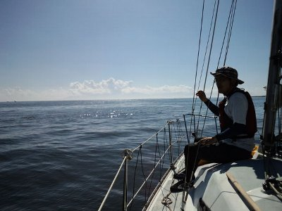
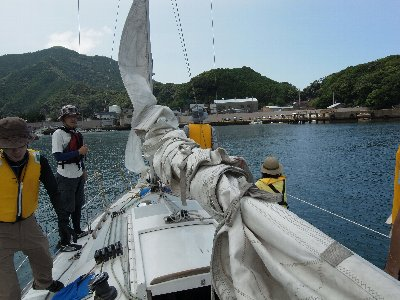
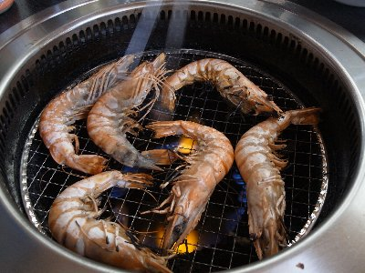

夏のクルージング | 2012年8月 幹事：サムちゃん |
|---|---|
| 夏だ！海だ！ヨットだ！ 今年もサムちゃんがヨット出してくれて、駿河湾クルーズです。青い空と碧い海、贅沢ですね。 今回は駿河湾を横断し、伊豆の宇久須を目指しちゃいました！ 前回の伊豆上陸には参加出来なかったので、私は初駿河湾横断＋伊豆上陸で楽しみです♪ 朝8時に清水港集合で、8時半前に出発！駿河湾横断はちょいと時間がかかるので早めの集合＋出発です。 | |
 いざ出発 |  う〜ん、風ないね〜 |
| 天気は快晴。しかし風が無い！ さらにカメラ忘れた！ これは痛い！（今回の写真に私が撮ったものは一枚も有りません） 風が無いため、ヨットはエンジンで進みます。普通なら風を受けて船体を傾けながら進むのですが、ほぼ水平を保ったまま波を切っていきます。風が全くないわけではないけれど、快適に艇を進めるほどには吹いていない。 富士山も裾に雲が掛かっているけど綺麗に見えます。トビウオも飛んでました。トビウオはまさに「飛ぶ」と表現するしかないくらいに長い飛行距離で水面上を駆けているんです。凄いよね。しかも早い！ | |
 富士山の山頂だけ見えてます |  穏やかな海です |
| 約3時間半かけて宇久須へ到着し、港へ接岸しました。他の港に接岸するのも初めてだったので新鮮です。 せっかく伊豆に来たのだからと、上陸して宇久須の「」でお食事。エビやら貝、魚を焼いて頂きます。これまたウマイ！ エビのぷりぷりと、貝のほくほくジューシーな汁、お腹一杯で超満足です。これでビールが飲めたらな〜（飲んでる人もいたけど） | |
|  宇久須港に到着 |  宇久須港 |
| シメにカキ氷を頂きました。2時間位食べてたかな。マッタリです。 満腹で昼寝としゃれこみたいけど、帰る時間です。 | |
|  海老♪海老♪ |  昼からガッツリ食べちゃった |
| 帰りは南風が吹いてきました。良い風です。メインセール、ジブセール共に一杯の風を受けて、ヨットがぐんぐん進みます。これですよ！気持ちいい〜〜！！ 船体が風を受け大きく右に傾き、波を切る様に力強く進んでいく時の爽快感はたまりませんね。碧い海に白い帆のヨット。傍から見たら絵になるでしょうね。波しぶき上げちゃって。（そんな写真も撮ってみたいです） 行きより早い感じで清水港に戻ってきました。やぱっり3時間以上は掛っているんだけど、気持ちが違います。 清水港には夕方着で、ほぼ一日中海にいたことになります。気持ちよかった〜＼(^▽^/ | |
 帰りは、おお、風が！ |  爽快です！ |
| 写真：サムちゃん＆kusa コメント：べっしー | |